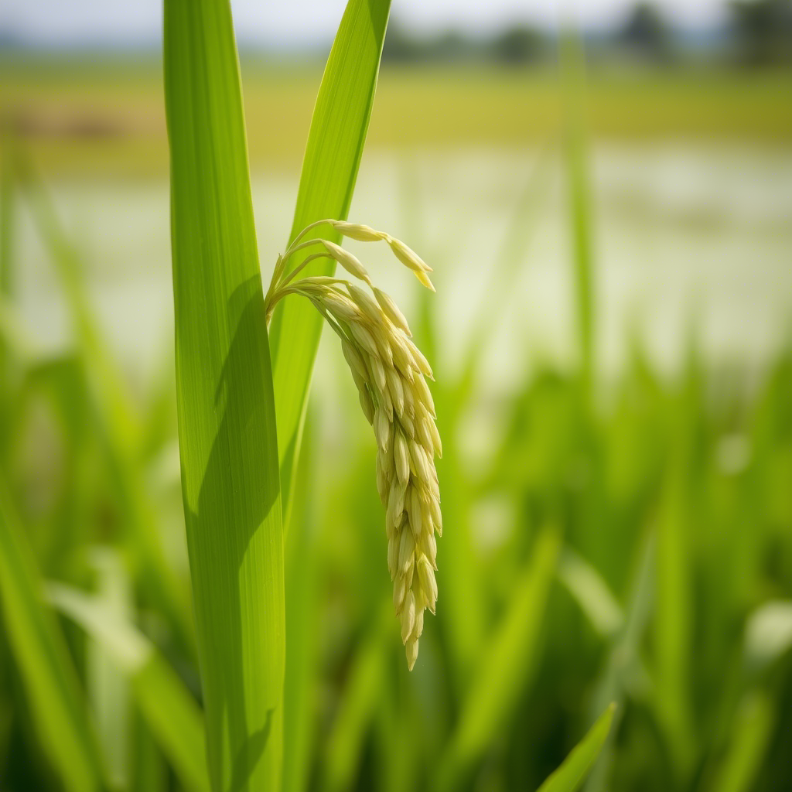

LEARN ABOUT
WWW.AQUASYNC.COM
AQUASYNC
INNOVATIVE SOLUTION FOR SUSTAINABLE AGRICULTURE
AquaSyncis an innovative, automated water management mapping system designed to tackle challenges in agricultural water distribution by ensuring equal water delivery to all crops, optimizing irrigation through strategic rerouting, and identifying the most effective water pathways.
Why Choose AquaSync?
- Equal Water Distribution - Guarantees balanced water delivery to all crops, promoting uniform growth and healthier yields.
- Irrigation Optimization - Enhances existing systems through intelligent rerouting and efficiency-focused mapping.
- Smart Mapping Technology - Identifies the most effective water routes using automated analysis and real-time monitoring.
EVERY CROP THRIVES EQUALLY
Embrace AquaSync's Core Values
